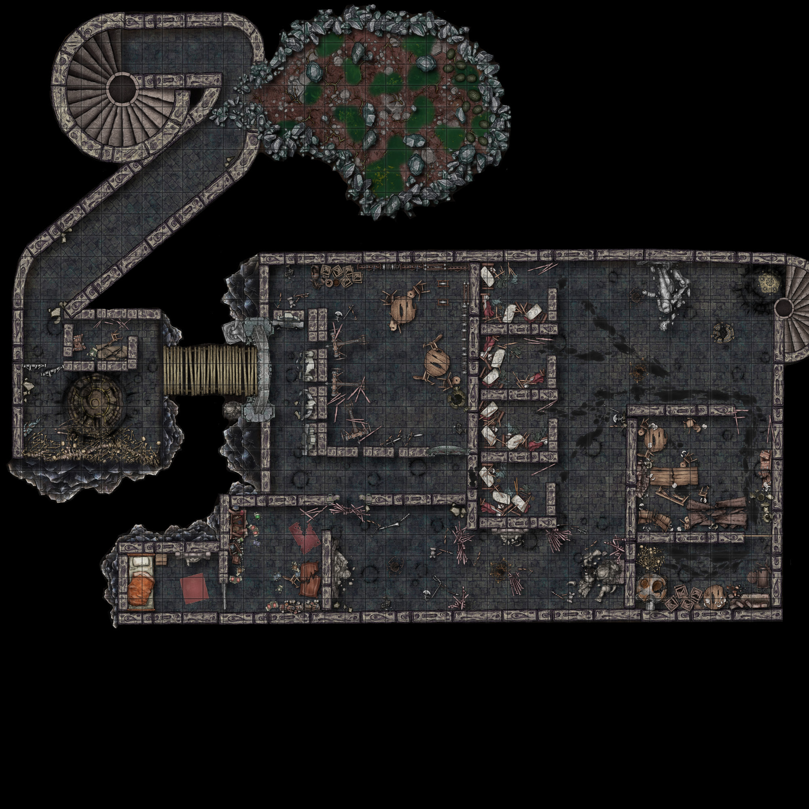

Acte III: El Temple Superior
Mapa del Temple Superior — El complex antic tallat a la pedra
El túnel de parets llises s'enfonsa cap a la foscor per un costat, la llum de la torxa llepant els racons d'una cova natural. A mesura que la llum s'escampa per la sala, la superfície reflectant de petites basses il·lumina els ossos, les carcasses mig devorades i la roba esquinçada d'humans i altres animals. Al fons de la caverna, un voladís fosc amaga dotzenes d'ous d'un verd fosc intens, coberts d'escates.
Si lluiten contra els basiliscs i saquegen el cau: diversos ous de basilisk, ossos i petits ídols deixats pels gòblins de gel.
El túnel continua avall més enllà del cau i s'obre en una caverna enorme. Les parts més altes de la cambra desapareixen en la foscor i un temple antic s'alça a l'altra banda de l'abisme, tallat directament en un monòlit de pedra més enllà d'un pont de fusta podrit. Els ossos d'una criatura gegantina s'estenen des del costat de la terrassa i es perden en la negrura de sota. Una sequera rància impregna l'aire, pols i runa cobrint gairebé cada centímetre del terra cremat i picat.
Plataforma de pedra amb una petita sala de guàrdia al costat. A l'altre costat: ossos d'una criatura gegantina que s'estenen cap a l'abisme.
- Cos dessecat d'un humà armat, 'Renkidu': porta una espasa de plata +1 amb la inscripció «Renkidu — la meva vida per la llum», un Pou d'Esperits intricadament tallat en forma de collaret, i una Pedra d'Obsidiana (presó d'un poderós diable — es trencarà en un moment de gran estrès si se l'emporten).
- Runa de prohibició al terra (Arcana DC 19): no es permet teletransportació, portes planars ni transport màgic dins del temple.
- Sala de guàrdia: conté algunes claus entre les runes.
- El pont cruix quan s'hi camina — baixa probabilitat de trencar-se però alta probabilitat de fer soroll.
- Portes del temple entreobertes, cobertes de cicatrius de batalla. Una estàtua es manté dreta a la porta; l'altra està trencada.
Pou d'Esperits
Objecte Únic, 2 càrregues diàries, Requereix Sintonització
- Forma de petita llanterna, emet llum blava freda en 3m de radi.
- Brillar-la sobre restes causa il·lusions fantasmals de les criatures mortes.
- La il·lusió plana sobre les restes i representa l'últim minut de vida de la criatura (silenciós, sense revelar altres presents).
- Avís: l'exposició continuada al món espiritual pot causar efectes duradors.
Si usen el Pou d'Esperits sobre Renkidu: el veuen aguantant la llanterna enlaire, sang caient-li dels ulls, mirant fixament els ossos del monstre.
Si volen veure la mort del monstre: DC 15 Saviesa o guanyen un punt de Follia.
Una gruixuda capa de pols cobreix els prestatges de fusta podrida, i dotzenes d'armes finament forjades escampen el terra on els seus prestatges els han fallat, la llum de les torxes reflectint-se en les seves superfícies platejades.
S'obre amb les claus de la sala de guàrdia. Armes platejades estàndard: dagues, fletxes, virots, llances, maces i espases, la majoria antigues i decrèpites. També hi ha cota de malla i armadura de plaques.
La porta s'obre amb un grinyol de frontisses rovellades i la vostra llum llepeja la fusta destrossada i els llibres esquinçats que escampen el terra. Tot està ara destrossat fins a ser irreconeixible.
- Investigació: els materials són de millor qualitat que a altres parts del temple. La porta interior encara està tancada amb clau (claus de la sala de guàrdia).
- Conté els Diaris de l'Exarca en antic idioma Aarakocran. Es poden portar a la seva ciutat per desxifrar-los. Fins i tot amb coneixement de l'idioma, gran part està codificat.
- El que en poden extreure: l'Exarca és l'encarnació mortal de «Laki — El Déu Justicier» i aquest temple va ser amagat per protegir un artefacte antic durant la invasió del món.
- Percepció alta: alguna cosa els observa des de dalt.
- Percepció molt alta: moviment a les altures del sostre.
- Les sales són fosques; es poden encendre els brasers (no il·luminen els sostres alts).
- La sala principal té una estàtua del déu Laki.
- Un Dimoni d'Os i Dimonis Espinosos s'amaguen (vegeu Sales 7/8).

Plànol interior del Temple Superior
Les portes estan rebentades cap endins, com si haguessin estat esquinçades, i taques de sang, enfosquides fins al negre amb el temps, s'arrosseguen des de les robes brutes i els mobles trencats de l'interior.
Res de valor. Fusta trencada i podrida, robes esquinçades i brutes, un únic amulet de peltre esquerdat dedicat a Laki.
Diverses taules llargues i bancs tomats descansen al terra davant d'una llar de foc buida, com si haguessin estat llançats de qualsevol manera. Més taques cobreixen el terra i les parets, i plats trencats brillen des del terra enfosquit amb la llum.
- Investigació: revela un antic menjador amb rastres de sang que porten a la cuina (Sala 8).
- La cuina conté un Dimoni d'Os assegut sobre ossos decrèpits.
- Si els aventurers han alertat el dimoni d'os (p. ex., cruixit del pont o altres sorolls): surt per emboscar el grup juntament amb mitja dotzena de Dimonis Espinosos amagats al sostre alt de la Sala del Temple.
Combat al Temple
| Criatura | Quantitat |
|---|---|
| Dimoni d'Os (Bone Devil) | 1 |
| Dimonis Espinosos (Spined Devils) | 6 |
Emboscada si han fet soroll al pont o en explorar.
Al terra hi ha gravada una altra runa, gairebé indistingible del terra si no fos pels polsos ocasionals de llum daurada tènue. En canvi, els vostres ulls són atrets pels contorns carbonitzats de formes terrorífiques contra la paret al voltant de l'entrada de les escales.
- Runa oculta davant les escales cap al Temple Inferior. Es descobreix amb un control d'Investigació o Detectar Màgia.
- La runa vaporitza qualsevol persona amb cor o intencions malvades que la trepitgi.
- Els aventurers poden intentar desactivar-la (amb gran dificultat).
- Si la trepitgen, només fa mal als qui tinguin intencions hostils o malvades.
Dany per Corrupció
| Corrupció | Dany |
|---|---|
| 1–5 | Cap |
| 6–10 | 3d6 radiant |
| 11–15 | 6d6 radiant |
| 15+ | 9d6 radiant |
- La runa també elimina 1 punt de corrupció a tots els qui la travessin.
- Les marques carbonitzades són dimonis i diables que van ser incinerats.
- Les escales cap avall estan plenes d'ossos de defensors del temple amb armadura de plaques esquerdada (múltiples espècies).